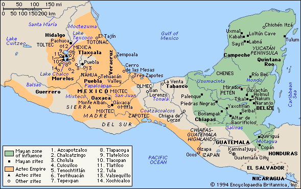

The Aztec Empire vs. The Inca Empire: Comparing Two Empires of the New World
By: Nora
Introduction
The Aztec Empire and the Inca Empire were two of the most dominant empires of the New World. They existed on opposite sides of South America and had significant differences in their culture, economy, and military. The Aztec Empire was located in central Mexico and was one of the most powerful and organized empires in the Americas. The Inca Empire, on the other hand, was located in the Andean Mountains of South America and was known for its advanced engineering and agricultural practices.
This comparison of the Aztec and Inca empires examines not only the similarities and differences between the two, but it also provides an insight into the historical, social, and cultural aspects of the New World. These two empires were among the most advanced and complex civilizations of their time, and their impact can still be seen in modern-day South America.
By comparing these two empires, we can learn about the history and evolution of civilizations in the Americas. It can also provide us with an understanding of the socio-economic and political conditions that prevailed in the New World during the pre-colonial period. Through the examination of these empires' trade, culture, belief systems, and military, we can gain insight into how they influenced and shaped the future of the continent.
In conclusion, as we delve deeper into the Aztec Empire vs. the Inca Empire, we will see how their differences and similarities can help us understand the history of South America. It allows us to appreciate the complexity of the societies that existed before the arrival of the Europeans and the impact they made on the New World. Join us on this journey of discovery as we explore the fascinating history of these two empires.
ad space
Geography and Location
The Aztec Empire and the Inca Empire were two great civilizations that evolved in the New World. Despite their geographical and cultural differences, these two empires shared a few interesting similarities. However, their geographical location may be seen as the most significant difference between the Aztec Empire and the Inca Empire.
The Aztec Empire was located in what is now known as central Mexico, stretching from the Pacific Ocean to the Gulf of Mexico. The Aztecs built their capital, Tenochtitlan (now Mexico City), on an island in the middle of a lake. The Aztecs built their city using a system of canals and bridges, which allowed them to transport goods and people with ease.
On the other hand, the Inca Empire was located in South America, covering much of the western coastline of South America, including present-day Peru, Ecuador, and Chile. The Incas built their capital, Cusco, in the Andes Mountains. The steep terrain of the mountains made it difficult for outsiders to invade, and the Incas used this to their advantage by building a sophisticated system of roads and bridges to connect their empire.
Both empires were situated in regions with varying climates and geography. The Aztecs thrived in a warm, dry climate with fertile soil, where they grew crops such as maize, beans, and squash. The Incas, on the other hand, survived in the cold, harsh terrains of the Andes Mountains. They built intricate terraces that enabled them to grow crops such as potatoes, quinoa, and maize.
In conclusion, the geographical location of the Aztec Empire and the Inca Empire affected their development and way of life. The Aztecs resided in a flat, lush valley that provided them with abundant resources and played a critical role in their economic success. At the same time, the Inca Empire's location was challenging, but it helped them to build a resilient and formidable empire that conquered most of South America.
ad space
Social Organization and Government
When we envision empires, we commonly picture grand buildings, advanced technologies, and military conquests. But the success and power of the Aztec Empire and the Inca Empire were rooted in their social organization and government structure. These two New World empires had different ways of organizing their societies, but both were highly effective.
The Aztecs were a warrior people who believed that their main purpose was to serve the gods by waging war and offering them sacrifices. Their society was divided into classes based on wealth, with a powerful emperor on the top. The emperor was seen as divine and had absolute power. Below him, there were nobles, priests, and commoners. Each class had different duties, rights, and obligations.
In contrast, the Incas were known for their emphasis on communal living and the concept of "ayni," or mutual aid. The Inca society was divided into clans, with the emperor at the head of a centralized government. The emperor was seen as a representative of the gods, and his power was limited by the council of nobles. Workers were assigned to different tasks based on their specialties and abilities. The Incas were also known for their sophisticated system of record-keeping, which helped them to efficiently manage their vast empire.
Both empires had successful systems of social organization and government that allowed them to maintain control over their vast territories. They were able to establish vast trade networks, build impressive infrastructure, and maintain advanced agricultural practices. They were also able to keep their populations satisfied by providing them with security, religious guidance, and social organization.
In conclusion, the Aztec Empire and the Inca Empire were two of the most significant empires of the New World, and their social organization and government structures played a crucial role in their success. Although they had different approaches, both empires were able to achieve a level of organization and efficiency that allowed them to thrive for centuries.
ad space
Religion and Culture
When we think of the New World, we often imagine two great empires: the Aztec Empire and the Inca Empire. These two empires emerged on opposite sides of the continent - the Aztecs in modern-day Mexico and the Inca in modern-day Peru - and spanned centuries before they were ultimately conquered by European colonizers. Despite their similarity in prominence and magnitude, the Aztec and Inca empires differed on several fronts, among them, religion and culture.
At the time of their zenith, the Aztec Empire was a collection of city-states, with a ruler or tlatoani at the helm. They worshipped an extensive array of gods and goddesses, created in the image of forces of nature or human characteristics, and some of which included human sacrifice. The Aztecs viewed their religion and their empire as intertwined, with their gods and goddesses protecting and strengthening their city-states as well as their military aggression. Their understanding of religion informed their artistic expressions, which often portrayed deities and aspects of religious rituals.
By contrast, the Inca Empire saw religion and culture as bound together, with the ruling Inca seen as the son of the sun god, Inti, and their society organized around the principle of ayllu, or a collective social structure. They worshipped gods and goddesses too, but their rituals emphasized harmony with nature, shared wealth, and balance. Religion played a significant role in their art as well, with an emphasis placed on textiles and jewelry made from gold and silver.
Over time, both empires experienced a shifting religious and cultural landscape due to expansion, trade, and diplomacy. The fusion of indigenous and European religious elements during colonization further complicated religious liberation and cultural continuity.
In conclusion, despite their geographical difference, the Aztec and Inca Empire were different in their religious and cultural practices. It is fascinating to understand how culture and religion impact the development of an empire, and by looking at how the Aztec and Inca Empire addressed religion and culture, can we understand them better.
ad space
Economy and Trade
When it comes to the Aztec Empire and the Inca Empire, the two are often compared in various aspects, but when it comes to the economy and trade, there are some significant differences. Despite being several thousand miles apart, both Empires shared some similarities in their economies, but at the same time, there is a lot that sets them apart.
The Aztecs were known for their sophisticated market system that used cacao beans (used as a currency) for trade. In contrast, the Inca Empire used a socialist approach, where the state provided everything and divided it among the people. They had no markets or currency; instead, they traded goods and services.
One of the most notable differences was the trade routes. The Aztecs' trade routes were mostly on water, where they used the canals surrounding Tenochtitlan to exchange goods with neighboring cities. In contrast, the Inca Empire's trade routes were primarily on foot, building and maintaining massive road networks through the mountains to connect their cities.
Agriculture played a significant role in both Empires, but the Inca Empire's approach was more effective. They used innovative techniques like terrace farming, irrigation, and fertilizer collection to maximize production in the challenging mountainous terrain where they lived. In contrast, the Aztecs used floating gardens (chinampas) to grow crops, constantly expanding to cater for their huge population's food needs.
The arrival of the Spanish in the 16th century wiped out the Aztecs and the Inca Empires, and with them, their mode of trade and economy vanished. However, their legacy lives on, and through their economic systems, we can learn a lot about the culture, values, and way of life of both Empires.
So whether you're interested in early global trade, history, or cultural studies, understanding the economy and trade of the Aztec and Inca Empires offers valuable insights into the past, which can guide the future. Explore more about these fascinating Empires and discover their significant contributions to the world.
ad space
Conclusion
After a thorough examination of the Aztec Empire and the Inca Empire, it is clear that both civilizations were remarkable in their own right, achieving remarkable feats in agriculture, architecture, and urban planning. The Aztecs were known for their brutal warfare tactics and their sophisticated society, while the Inca Empire was renowned for their advancements in engineering and road-building.
Despite these differences, there were striking similarities between the two empires. Both had strong central governments that controlled extensive territories, and both used tribute systems to maintain control over conquered peoples. Additionally, both civilizations were impacted by the arrival of Europeans, with devastating consequences for their societies.
Overall, it is impossible to determine a clear "winner" in comparing the Aztec Empire vs. the Inca Empire. Both were complex, dynamic civilizations that left a lasting impact on the New World. However, the downfall of these empires serves as a harsh reminder of the destructive nature of colonialism and the need to approach cultural exchange with humility and respect.
As we continue to explore and learn about the rich history of the Americas, it is crucial to remember the legacy of the Aztecs and the Incas, and the lessons we can learn from their achievements and struggles. By studying these empires, we can gain a deeper understanding of the diverse societies that existed in the New World before European contact, and the devastating impact that colonialism had on these communities.
ad space